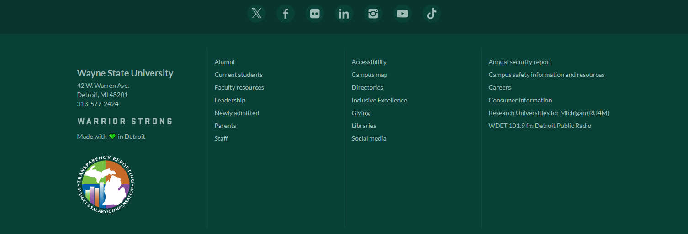
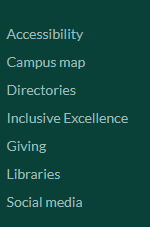

I have chosen the WSU campus page because I wanted to select something different from WSU program page. This
page
meets most of the criteria, with a header that is clearly defined, "Find Yourself in Detroit" there are
also several lists within this page. The first is the unordered list at the top of the page that functions
as a
navigation panel. This has several small blocks of text instead of one large paragraph, which is the only
criteria it does not fully meet.
Site-header
This is the header that seems to appear on almost every page of wayne.edu. When inspecting the HTML of the
webpage and selecting the first header
this banner is ultimately what ends up selected. Additionally, the title of the page is Wayne State
University and intutively the title and main header would be the same.
Main Navigation Panel
The main navigation, similar to the site header appears consistent on most of the pages of the university's
website. One of the other things that makes this the main navigation
is where this appears within the script, and therefore the webpage. This is one of the first elements
created the banner it exists in is a second header that is holding the different
then the body section begins and the script for hyperlinks is the first thing.
Primary Content
This was chosen as the main content, however this actually two distinct items. The top piece is highly
sylized and exists within a container.
The second section begins with a h2 header than moves to a paragraph that contains the second blurb.
Page Footer

This section is visually the footer of the webpage, it is at the very bottom of the page. Within the script
for the webpage it is also contained within a footer container.
Heading Hierarchy
h1 headings Find yourself in Detroit This being the singular h1 header on the webpage is
appropiate, it draws the attention of the user.
h2 headings
Create your campus life
Earn more than a degree
Discover Detroit
See for yourself
Become a Warrior
Majors and Programs
First-year
Transfer
Postbaccalaureate
Vetran
Graduate
International
I agree with the first five headers being set as h2. the remaining headers are all arranged as several
different grids throughout the page. Many of the grids are set as h3 header, I was unable to see why
some
were assigned h2 and some were assigned h3.
For the sake of consistency I would designate 6-12 as h3 headers. 1-5 being set as h2 is logical, they are
breaking the webpage down into several distinct sections
from a user perspective there should not be too many sections on a webpage or it can become over
stimulating.
Five is a perfect amount for this level of information.
h3
Student organizations
Housing
Athletics
Research
Entrepreneurship and innovation
Study Abroad
Detroit's cultural center
Community Engagement
Volunteer opportunities
WSU Spotlight of the Day
Mary
Sophie
Lists
The first list evaluated is an unordered list that is contained within the footer,
having this as an unordered list is logical, the page is providing a link of common internal hyperlinks
that will direct users to frequently accessed information prospective students may need when evaluating WSU
as a
college.

The second list evaluated is also an unordered list that is contained within the footer,
having this as an unordered list is logical, the page is providing a link of common internal hyperlinks
that will direct users to frequently accessed information prospective students may need when evaluating WSU
as a
college.
This webpage actually contains no ordered lists, which given the content of the page makes sense,
containing a list with the steps to get involved in campus might be a good thing to add.
Link Analysis
Most of the links contained within the page are internal and direct to other wayne.edu pages.
many of these are contained within the h3 headers discussed above.
Housing redirects to housing.wayne.edu/
Research redirects to research.wayne.edu/
Study abroad redirects to studyabroad.wayne.edu/
However, there are a handful of external links. Underneath the WSU Spotlight of the Day h3 banner
there are two external links two external links to youtube videos. One of them is embedded into the page
and one of them is not, the only difference I observed between the two was an additional line
after the reference link is = =0 after the link that redirects the user to youtube.
The final external link is contained within the footer redirects users to the WDET.ORG the Detroit Public
Radio.
There is no indication prior to clicking on the link that is goingt to redirect
This item does contain the described target= described previously in the course
There 3 errors and 3 alerts on this page.
The biggests accessibility issue is the the error which occured twice. Linked image missing alternative
text.
This creates an issue for individuals using a screenreader as the it will come across the image and not
have
any additional information to provide the user.
Under h2 heading Discover Detroit which links to a youtube video.
Half way down the page under h2 heading see for yourself.
The second accessibility issue as outlined in the wave report is the skip navigation link
this one of the first things that would be read by a screenreader and would give the user
the ability to skip past the reading of the navigation menu into the body of the webpage.
An improvement that could be made
As discussed earlier while reviewing the external links.
Under the WSU Spotkight of the day there are two different videos. The first one titles Mary plays on
the page,
the second titles Sophie redirects to youtube. This second link should be changed to play on the page
or at very least provide a warning to users that they are about navigate away from this site.
This page only contains one error The aria-hidden attribute must not be specified on the noscript element.
There are three warnings for the same type of issue. Trailing slash on void elements has no effecr and intereacts badly with unquoted attribute
values.
The error returned is referencing the hiding of an element from accessibility programs like
screenreaders,
more specifically it is referencing a piece that is already hidden and therefor does not need to be
hidden
again.
Summary
This project gave me the oppurtunity to analyze in depth just how much code goes into a single webpage.
it was also a good oppurunity to practicle some of the basic styling we have been discussing recently.
Additionally having the chance to run the page through accessibility checker provided a valuable framework for what
webdesigners need to cognizant of moving forward, particularly with increased requirements on accessibility and ease
of use for screeen readers that went in to effect earlier this year.
Generally speaking this webpage was structured well, only a few errors popped up between the accessibility and validiator
and some could argue the alt text not being provided is not a huge deal because the paragraph located next to the images
explain what is being depicted by those images or videos. I think the biggest improvement could be to fix the youtube video
so they are both embedded within the webpage and do no redirect users.